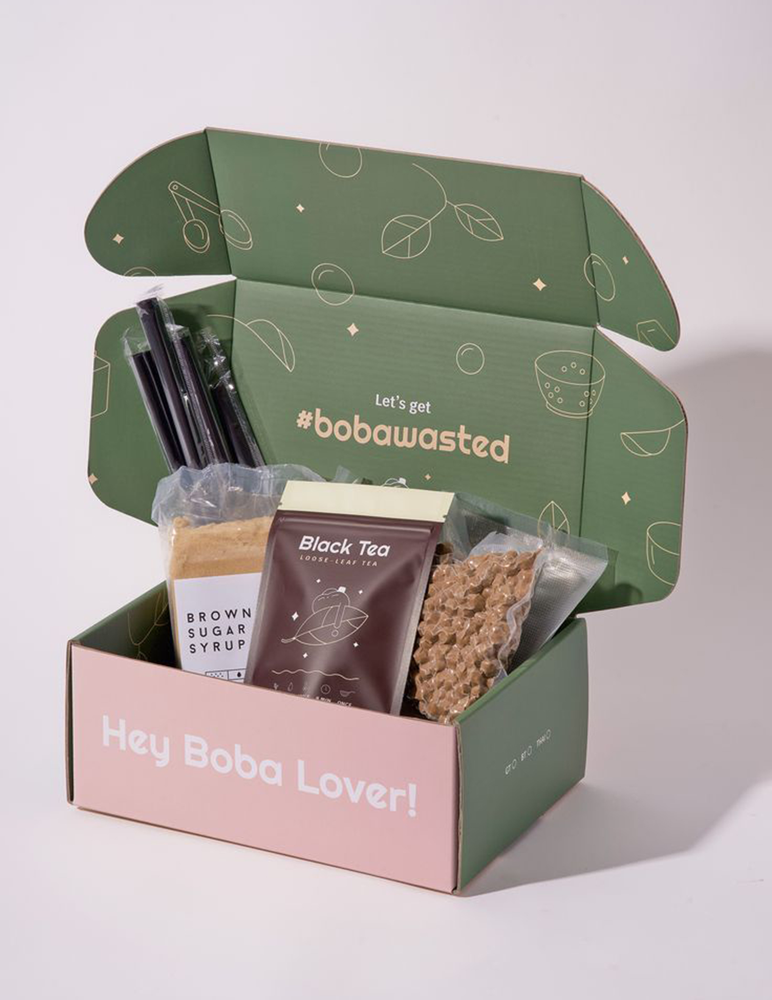

Sketches
To get things started, I explored different layouts along with doodles based around spring. I knew I wanted yarn and flowers to be definite assets, so I mostly experimented with them. I played around with the number of petals, the movement of the yarn, and the lineart brush style, whether to make it like a ball pen, or more of an angled marker.


Creative Creation
The main typeface used for the headings is New Kansas Bold. The paragraph and caption typeface is Niramit regular and italics. I wanted spring colours, that are vibrant but soft. The main green lime was meant for being creative and connected to nature, as to thats where we acquire the yarn. The pink bubblegum was meant to express caring and playfulness, for the act of creating and gifting. Most of these doodles are seen in the deliverables, except the bottom right section, where it was used as inspiration for possible assets. I also tested the doodle colours as well, deciding if to make them pure black, off-black charcoal, or even white.
Gallery
